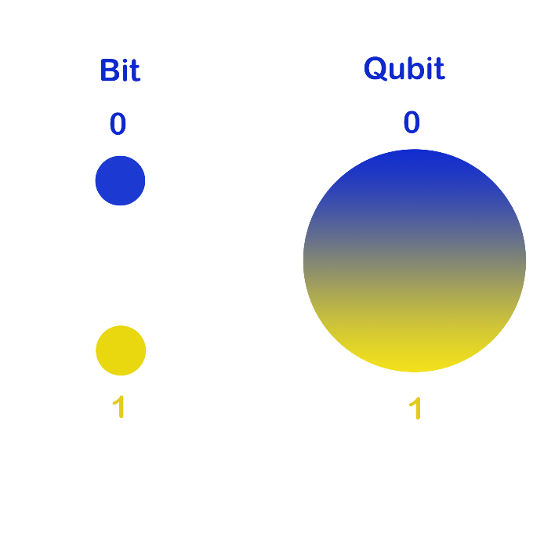
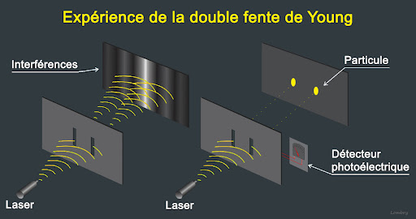
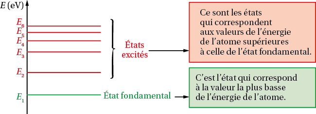
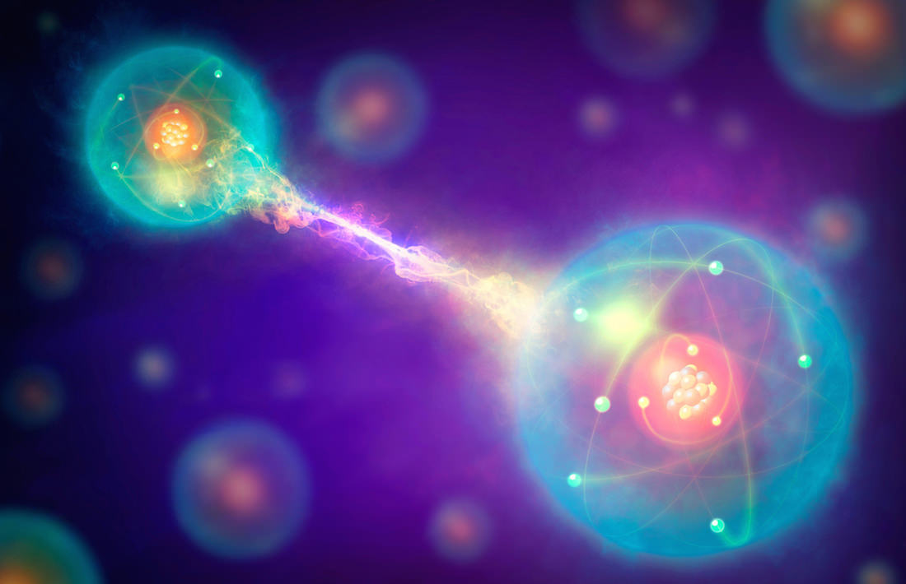
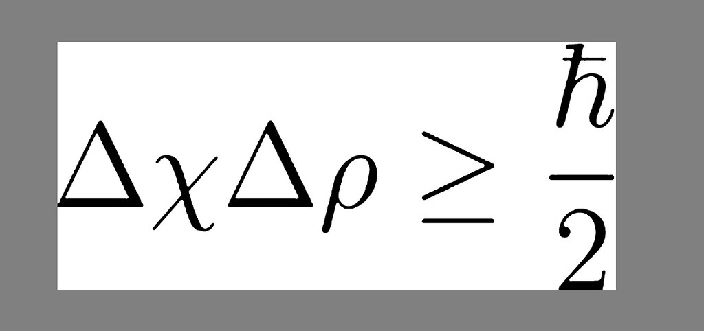
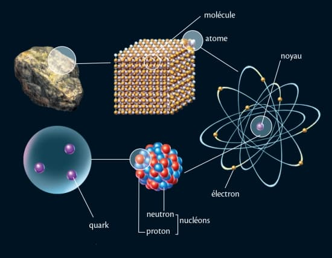
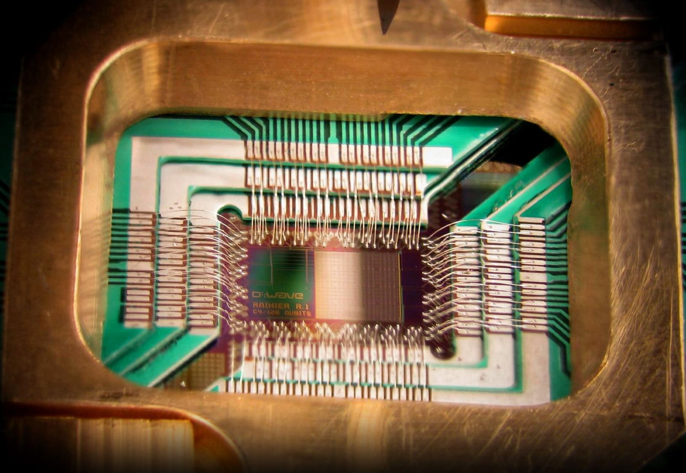
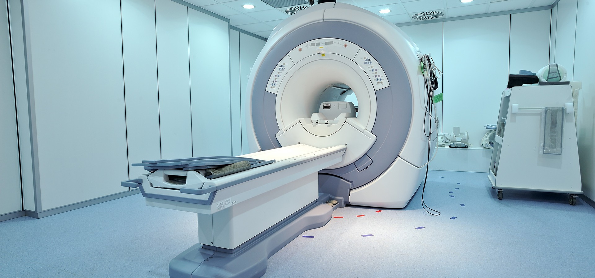
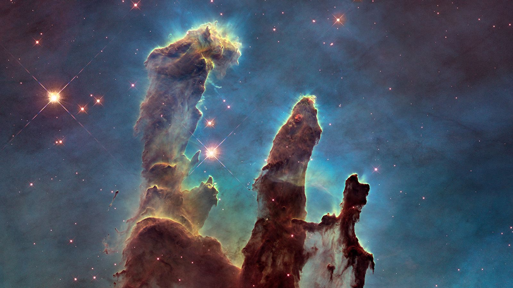

Comprendre la phisique quantique
Deux théories importantes
A quoi ça sert ?
Essayons de comprendre comment ça fonctionne
la phisique quantique c'est l'étudie de comment les particules qui composent l'atome et la lumière se comportent à une très petite échelle.
Voici quelques principes de base de la physique quantique :
Le principe de superposition :
La superposition est un autre concept fondamental en physique quantique qui peut paraître un peu étrange au premier abord. Voici une explication simplifiée : Une particule quantique peut exister dans une combinaison d'états différents en même temps. Ce n'est que lorsqu'une observation ou une mesure est effectuée que la particule "choisit" un des états possibles. Cela est souvent représenté par le célèbre exemple du chat de Schrödinger, qui est à la fois vivant et mort jusqu'à ce qu'on ouvre la boîte.
États Multiples Simultanés
En physique classique, un objet peut se trouver dans un état à la fois - par exemple, une pièce de monnaie est soit face, soit pile. En physique quantique, en revanche, les particules comme les électrons peuvent être dans plusieurs états à la fois. C'est ce qu'on appelle la superposition.
Exemple du Chat de Schrödinger
Un exemple célèbre pour expliquer la superposition est l'expérience de pensée du chat de Schrödinger. Imaginez un chat enfermé dans une boîte avec un mécanisme qui a une chance sur deux de libérer du poison. En physique classique, le chat est soit vivant, soit mort. Mais en physique quantique, tant que la boîte n'est pas ouverte et que l'observation n'est pas faite, le chat est considéré comme étant à la fois vivant et mort. Ce n'est qu'au moment de l'observation que le chat "choisit" un état.
Observation et Effondrement de la Fonction d'Onde
La superposition dure tant que la particule n'est pas observée. Lorsqu'une observation est faite, la particule "choisit" un des états possibles dans lesquels elle pourrait être, ce qu'on appelle l'effondrement de la fonction d'onde. Cela signifie que la réalité quantique est déterminée en partie par l'acte d'observation.

Applications Pratiques
La superposition est un principe clé derrière les technologies comme les ordinateurs quantiques. Les qubits, qui sont les unités de base de l'information quantique, peuvent être dans une superposition d'états, permettant des calculs beaucoup plus complexes et rapides que les bits classiques.
La dualité onde-particule :
Les particules quantiques, comme les électrons et les photons, peuvent se comporter à la fois comme des particules et comme des ondes. Par exemple, la lumière peut se comporter comme une onde (ce qui explique pourquoi elle peut se diffracter ou interférer) et comme une particule (ce qui explique pourquoi elle peut être comptée en photons).
Imaginez que vous avez un objet très spécial qui peut se transformer. Parfois, il ressemble à une balle (une particule), et parfois à une vague dans l'eau (une onde). C'est ce que la dualité onde-particule nous dit sur certaines choses très petites, comme les électrons (qui font partie des atomes) et les photons (qui sont de minuscules particules de lumière).
Quand C'est une "Balle" (Particule)
Comme une balle, ces petites choses peuvent rebondir sur quelque chose ou être à un seul endroit à la fois. Si vous lancez une balle contre un mur, elle frappe le mur en un seul point.
Quand C'est une "Vague" (Onde)
Parfois, ces petites choses agissent comme des vagues. Si vous jetez une pierre dans un étang, les vagues se propagent partout. Les vagues peuvent traverser des ouvertures et continuer à se propager de l'autre côté, ou même se croiser et créer des motifs.
Expérience Magique avec Deux Fentes
Imaginez maintenant qu'il y ait deux petites fentes, et vous lancez notre objet spécial à travers elles. Si notre objet se comporte comme une balle, il devrait passer par l'une des fentes et frapper un mur derrière, créant deux marques. Mais si notre objet se comporte comme une vague, il passe par les deux fentes en même temps, créant un motif de vagues qui s'entrecroisent de l'autre côté, formant un motif de bandes.
La Surprise
La surprise est que ces toutes petites choses (comme les électrons ou les photons) peuvent se comporter à la fois comme des balles et comme des vagues. Cela dépend de la façon dont vous les regardez ou essayez de les mesurer.
L'effondrement de la fonction d'onde :
La fonction d'onde d'une particule décrit la probabilité de trouver cette particule dans un certain état. L'acte de mesure provoque l'effondrement de cette fonction d'onde sur un seul état parmi toutes les possibilités.
Fonction d'Onde
En physique quantique, une fonction d'onde décrit tous les états possibles (comme les positions, les vitesses, etc.) dans lesquels une particule pourrait être. Tant que personne ne regarde, la particule n'est pas dans un état spécifique, mais plutôt dans une sorte de mélange de tous les états possibles.
Observation
Lorsqu'une observation est faite (comme mesurer la position d'une particule), la fonction d'onde "s'effondre" à un seul état. Cela signifie que la particule choisit soudainement un état spécifique parmi toutes les possibilités.
Exemple du Chat de Schrödinger
Imaginez le fameux chat de Schrödinger, qui est à la fois vivant et mort tant que personne ne regarde dans la boîte. Lorsque vous ouvrez la boîte et observez, la "fonction d'onde" du chat s'effondre, et il devient soit vivant, soit mort, mais pas les deux.
Nature Probabiliste
Avant l'observation, nous ne pouvons parler que des probabilités de trouver la particule dans un état particulier. L'effondrement de la fonction d'onde change ces probabilités en une certitude - mais seulement au moment de l'observation.
Débat en Physique Quantique
L'effondrement de la fonction d'onde est au cœur de nombreux débats en physique quantique. Les scientifiques ne sont pas tous d'accord sur la façon dont ou pourquoi cela se produit, ou même si cela se produit vraiment de la façon dont on le pense.
Quantification de l'énergie :
Concept de Base
En physique classique, l'énergie, comme celle d'une onde lumineuse, peut varier de manière continue. Cependant, en physique quantique, l'énergie est quantifiée, ce qui signifie qu'elle ne peut exister qu'à des niveaux spécifiques, un peu comme les marches d'un escalier.
Exemple de l'Atome d'Hydrogène
L'un des exemples les plus connus de quantification de l'énergie est observé dans les atomes, comme l'atome d'hydrogène. Les électrons dans un atome ne peuvent occuper que certaines orbites ou niveaux d'énergie spécifiques.
Transitions Énergétiques
Lorsqu'un électron passe d'un niveau d'énergie à un autre, il absorbe ou émet un quantum d'énergie précis, qui correspond à la différence d'énergie entre ces niveaux.
L'intrication :
Des particules peuvent être intriquées, ce qui signifie que l'état de l'une dépend instantanément de l'état de l'autre, peu importe la distance qui les sépare. Cela défie notre compréhension classique de la causalité et de la séparation dans l'espace.
Lien Invisible
Imaginez que deux particules, disons deux électrons, sont comme des jumeaux magiques. Même si vous les séparez et les emmenez loin l'un de l'autre, ils ont encore une sorte de lien invisible. Ce lien est ce que les scientifiques appellent l'intrication.
Comportement Miroir
Si vous changez quelque chose sur l'un des jumeaux (comme son spin, une propriété quantique), l'autre jumeau va instantanément changer de la même manière, peu importe la distance qui les sépare. Cela se passe comme si les deux particules communiquaient instantanément, mais sans aucun moyen de communication connu.
Corrélation Pas Causalité
Il est important de comprendre que cette "communication" instantanée ne signifie pas que l'information voyage plus vite que la lumière (ce qui violerait les lois de la physique). C'est plutôt que les deux particules sont si étroitement liées (intriquées) que le changement de l'une affecte instantanément l'autre.
Effet de Mesure
L'intrication est très fragile. Si vous mesurez l'une des particules intriquées, le lien spécial entre elles est brisé. C'est ce qu'on appelle l'effondrement de l'état intriqué.
Applications Pratiques
L'intrication a des applications potentielles dans des domaines comme la cryptographie quantique (pour envoyer des informations de manière ultra-sécurisée) et les ordinateurs quantiques (pour effectuer des opérations de calcul complexes très rapidement).
L'incertitude de Heisenberg :
Le principe d'incertitude stipule qu'il est impossible de connaître avec précision à la fois la position et la vitesse (ou la quantité de mouvement) d'une particule en même temps. Plus vous connaissez précisément l'une de ces quantités, moins vous connaissez précisément l'autre.
Principe de Base
Selon ce principe, il est impossible de connaître avec une précision absolue à la fois la position et la vitesse (ou la quantité de mouvement) d'une particule à un instant donné. Plus vous êtes précis sur la mesure de l'un, moins vous pouvez être précis sur l'autre.
Un Concept Différent de l'Incertitude Classique
Ce n'est pas simplement une limite de notre capacité à mesurer; c'est une propriété fondamentale de l'univers. En physique classique, on peut théoriquement mesurer la position et la vitesse d'un objet avec une précision parfaite. Mais en physique quantique, cette incertitude est intrinsèque.
Formulation Mathématique
où \(\Delta x\) est l'incertitude sur la position, \(\Delta p\) l'incertitude sur la quantité de mouvement, et \(\hbar\) est la constante de Planck réduite.
Implications
Le simple fait d'observer ou de mesurer la position d'une particule quantique affecte sa vitesse, et vice-versa. Cela souligne la différence entre le monde quantique et le monde que nous expérimentons quotidiennement. En physique quantique, beaucoup de choses sont déterminées par des probabilités plutôt que par des certitudes. Le principe d'incertitude est un reflet de cette nature probabiliste.
Applications et Conséquences
Le principe d'incertitude est essentiel pour comprendre et expliquer des phénomènes comme le comportement des électrons dans les atomes et la formation de paires particule-antiparticule dans le vide. Il joue un rôle dans la technologie quantique, comme la cryptographie quantique et l'informatique quantique.
La décohérence quantique :
La décohérence quantique est un concept important en physique quantique qui aide à expliquer comment le comportement quantique, souvent étrange et contre-intuitif, se traduit dans le monde classique que nous observons tous les jours. On paurait dire que ce concept explique pourquoi nous n'avons jamais vu de chat de Schrödinger
Superposition et Intrication
Comme nous l'avons déjà expliquén en physique quantique, les particules peuvent être dans des états de superposition, où elles existent dans plusieurs états à la fois. Les particules peuvent également être intriquées, ce qui signifie que l'état de l'une affecte instantanément l'état de l'autre, peu importe la distance qui les sépare.
Le Monde Quantique vs le Monde Classique
Ces comportements quantiques ne sont généralement pas observés dans le monde macroscopique (le monde classique) où les objets semblent avoir des positions et des vitesses bien définies. La décohérence quantique est le processus par lequel les états quantiques perdent ces propriétés quantiques (comme la superposition et l'intrication) lorsqu'ils interagissent avec leur environnement.
Interaction avec l'Environnement
Lorsqu'un système quantique interagit avec son environnement (qui est lui-même quantique mais complexe et chaotique), les phases des différentes superpositions se mélangent et s'annulent (un processus appelé "interférence destructrice"). Cela fait en sorte que le système semble perdre ses propriétés quantiques et se comporte plutôt comme un objet classique.
Transition du Quantique au Classique
La décohérence explique comment un système quantique, comme un atome ou un photon, en interagissant avec l'environnement, peut passer d'un état de superposition à un état où il semble avoir une position ou un état bien défini. C'est ainsi que les phénomènes quantiques donnent lieu à la réalité classique que nous expérimentons.
Rôle dans la Mécanique Quantique
La décohérence ne résout pas le problème de la mesure en mécanique quantique (comme l'effondrement de la fonction d'onde), mais elle aide à expliquer pourquoi le monde quantique et le monde classique semblent si différents.
Ces principes de base remettent en question notre compréhension intuitive du monde, car ils ne correspondent pas à l'expérience quotidienne que nous avons des objets macroscopiques. La physique quantique est à la base de nombreuses technologies modernes comme les semi-conducteurs, les lasers, et pourrait révolutionner les domaines de l'informatique et de la communication avec le développement des ordinateurs quantiques.
Les théories
De nombreuses théories en physique, notamment dans le domaine de la physique quantique, sont constamment élaborées et attendent des expériences futures pour être soit confirmées, soit infirmées, ouvrant ainsi la voie à une compréhension plus profonde de notre univers.
La théorie des cordes
La théorie des cordes est une idée en physique théorique qui essaie de décrire toutes les forces fondamentales et les particules élémentaires dans l'univers
Des Cordes, Pas des Points
Dans la physique traditionnelle, les particules élémentaires (comme les électrons et les quarks) sont décrites comme des points sans dimension. La théorie des cordes, cependant, propose que ces particules ne sont pas des points, mais plutôt de minuscules « cordes » vibrantes.
Vibrations des Cordes
Ces cordes peuvent vibrer à différentes fréquences, un peu comme les cordes d'un violon ou d'une guitare. La façon dont une corde vibre détermine les propriétés de la particule, comme sa masse et sa charge. Cela signifie que toutes les différentes particules sont en fait le même type d'objet (une "corde") qui vibre différemment.
Unification des Forces
Un des objectifs principaux de la théorie des cordes est d'unifier la gravité avec les trois autres forces fondamentales de la physique (l'électromagnétisme et les forces nucléaires forte et faible). La théorie des cordes semble capable d'incorporer la gravité, ce que les autres théories de la physique des particules ne peuvent pas faire aussi facilement.
Dimensions Supplémentaires
Pour que la théorie des cordes fonctionne mathématiquement, elle nécessite plus que les trois dimensions d'espace et une de temps que nous expérimentons dans notre vie quotidienne. Selon les versions de la théorie, il pourrait y avoir jusqu'à 10, 11, voire 26 dimensions.
Types de Théories des Cordes
Il existe plusieurs versions de la théorie des cordes, comme la théorie des cordes de type I, II, la théorie des supercordes, et la théorie des cordes hétérotiques. Chacune a ses propres particularités.
Défis et Recherches en Cours
La théorie des cordes est encore en développement et fait l'objet de recherches intensives. Un des défis majeurs est qu'il est extrêmement difficile de tester expérimentalement les prédictions de la théorie des cordes à l'échelle actuelle de l'énergie disponible dans les accélérateurs de particules.
La gravité quantique a boucles
La gravité quantique à boucles est une théorie en physique qui tente de décrire la gravité d'une manière qui est compatible avec les principes de la mécanique quantique.
Objectif
La gravité quantique à boucles cherche à unifier la relativité générale d'Einstein, qui décrit la gravité à grande échelle, avec la mécanique quantique, qui décrit le comportement des particules à très petite échelle.
Espace-Temps Quantifié
Contrairement à la relativité générale, où l'espace-temps est continu, la gravité quantique à boucles suggère que l'espace-temps est composé de boucles ou de "grains" discrets à l'échelle quantique. Ces boucles sont extrêmement petites, bien au-delà de ce que nous pouvons observer actuellement.
Réseaux de Spin
La théorie utilise des structures mathématiques appelées "réseaux de spin" pour décrire ces grains d'espace-temps. Chaque boucle dans le réseau représente une quantité quantique de volume ou d'aire.
Gravité Quantique
Dans cette théorie, la gravité est le résultat de la dynamique de ces boucles d'espace-temps. Cela diffère de la relativité générale, où la gravité est due à la courbure de l'espace-temps causée par la masse et l'énergie.
Avantages
L'un des avantages majeurs de la gravité quantique à boucles est qu'elle évite certains problèmes mathématiques (comme les singularités infinies) présents dans d'autres approches de la gravité quantique.
Défis et Recherches en Cours
La théorie est encore en développement et fait l'objet de recherches actives. Un grand défi est de trouver des moyens de tester expérimentalement les prédictions de la théorie, car les échelles auxquelles elle s'applique sont extrêmement petites.
Voyons à quoi peut servir la physique quantique :
Compréhension Fondamentale de la Matière et de l'Énergie
Elle explique le comportement et les interactions de la matière et de l'énergie à des échelles très petites, où les lois de la physique classique ne sont plus applicables.
Technologies de l'Information Quantique et Ordinateurs Quantiques
La physique quantique a mené au développement de l'ordinateur quantique, qui utilise les états quantiques des particules pour effectuer des calculs à une vitesse potentiellement bien supérieure à celle des ordinateurs classiques. Imaginez un ordinateur super-puissant qui peut résoudre des problèmes très compliqués très rapidement.
L'évolution des ordinateurs quantique devrait pouvoir permettre d'accélérer considérablement de nombeux calcules, on peut par exemple observer cela avec le décryptages de mot de passes. D'après l'hypothèse théorique de l'algorithme de Grover, l'utilisation des ordinateurs quantiques, pourrait réduire le temps nécessaire pour casser un cryptage par force brute d'un facteur de racine carrée.Cette méthode reste purement spéculative mais vise à illustrer le potentiel de réduction du temps de décryptage avec la technologie quantique.
Le tableau suivant représente le temps qui serait nécéssaire au décryptage avec un ordinateur classique en fonction du nombre de caractères, en comparaison avec un ordinateur quantique
| Nombre de caractères | Ordinateur classique | Ordinateur quantique |
|---|---|---|
| 4 | Instantané | Instantané |
| 5 | Instantané | Instantané |
| 6 | 5 s | Instantané |
| 7 | 6 mn | Instantané |
| 8 | 8 heures | 1 heure |
| 9 | 3 semaines | 2 jours |
| 10 | 5 années | 8 mois |
| 11 | 400 années | 20 années |
| 12 | 34k années | 200 années |
| 13 | 2m années | 14k années |
| 14 | 200m années | 400k années |
| 15 | 15bn années | 20m années |
| 16 | 1tn années | 1.4bn années |
| 17 | 93tn années | 12bn années |
| 18 | 7 qd années | 84bn années |
Cryptographie Quantique
Elle permet le développement de systèmes de cryptographie pratiquement inviolables en utilisant les principes de l'intrication quantique et de la superposition.
Imagerie Médicale et Mesures de Haute Précision
Des techniques comme la tomographie par résonance magnétique (IRM) et d'autres méthodes d'imagerie médicale reposent sur les principes quantiques. Ces technologies sont essentielles pour des mesures et des diagnostics très précis.
Nanotechnologie
La compréhension des phénomènes quantiques est essentielle pour concevoir et fabriquer des dispositifs à l'échelle nanométrique, qui ont des applications dans divers domaines, de la médecine aux matériaux.
Énergie et Matériaux
La recherche sur les cellules solaires, les matériaux supraconducteurs et d'autres technologies énergétiques avancées s'appuie sur la compréhension des propriétés quantiques.
Chimie Quantique
Les chimistes utilisent la théorie quantique pour comprendre et prédire les structures chimiques, les liaisons et les réactions.
Compréhension de l'Univers
La physique quantique joue un rôle dans l'explication de phénomènes astrophysiques et en cosmologie, y compris la nature des trous noirs et la structure de l'univers aux premiers instants après le Big Bang.
